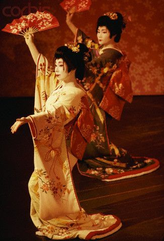
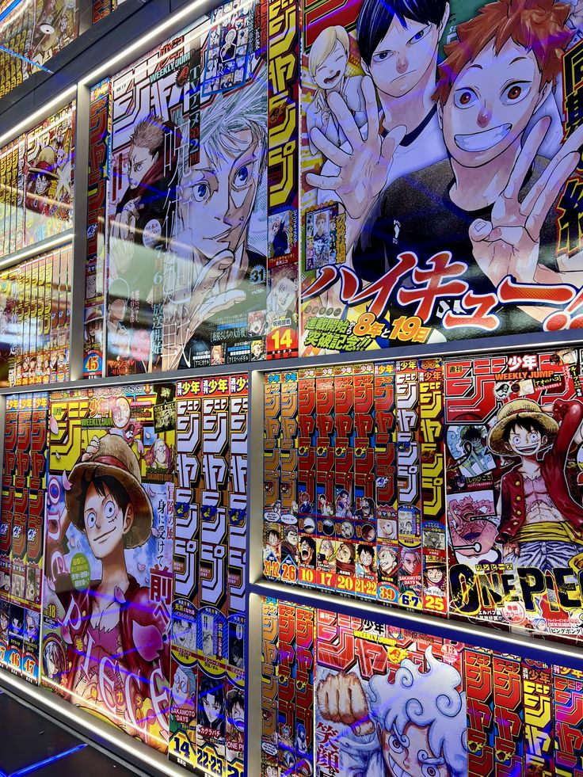

Tradiciones de Japón
Japón es un país con una cultura muy rica. Algunas de sus tradiciones más conocidas son el uso del kimono, la ceremonia del té y los festivales tradicionales llamados matsuri.

El Anime Japonés
El anime es uno de los elementos más famosos de la cultura japonesa. Son series y películas animadas creadas en Japón que han ganado popularidad en todo el mundo.
Algunos animes muy conocidos son Naruto, Dragon Ball, One Piece, Demon Slayer, Boku no Hero y Pokémon. El anime destaca por sus historias, personajes y estilos de animación únicos.

Comida Típica
La gastronomía japonesa es famosa en todo el mundo. Algunos de sus platillos más populares son el sushi, ramen, tempura y onigiri.
| Comida | Descripción |
|---|---|
| Sushi | Arroz con pescado o mariscos |
| Ramen | Sopa de fideos japonesa |
| Tempura | Verduras o mariscos fritos |
| Anime | Animación japonesa famosa mundialmente |
| Manga | Historietas o cómics japoneses |